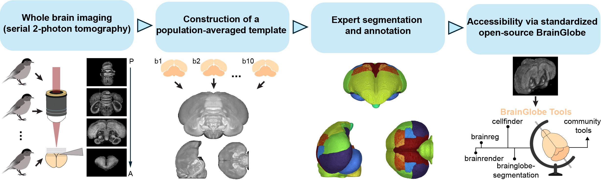

A digital three-dimensional brain atlas for the blackcap (Sylvia atricapilla)#
Introduction#
BrainGlobe provides a consistent interface to existing anatomical atlases from many species. However, digital 3D atlases do not exist for the majority of species.
The Eurasian blackcap (Sylvia atricapilla) is a songbird known to navigate by the Earth’s magnetic field, making it a very interesting animal model. However, the lack of a high quality reference atlas hinders computational neuroanatomy research in this species. Anatomical atlases define a standard coordinate system for an organ, and allow data from multiple sources to be aligned and then visualised and analysed together. This makes it easier to integrate results different sources, and facilitates data sharing and collaboration.
For this reason, we collaborated with Simon Weiler from the Sainsbury Wellcome Centre, and the lab of Henrik Mouritsen at the Carl von Ossietzky University of Oldenburg to build a high-quality digital reference atlas of the blackcap brain.
Process#
Full details of the atlas generation process are available in the preprint, however it is briefly as follows:
Acquire high-resolution whole-brain images using the Sainsbury Wellcome Centre serial section two-photon platform
Crop images to generate individual hemisphere images without damage (we used 15 hemispheres from 8 male birds)
Iteratively generate a crisp average template image from all the individual images using ANTs via an optimised script from the CoBra lab
Manually annotate brain regions using ITK-SNAP
Package the template and annotations image into the BrainGlobe format
Note
The template generation process is simplified by brainglobe-template-builder. This tool will be further improved to allow others to create their own atlases.
 Atlas generation process
Results#
We have initially generated a template reference image at 25 micron isotropic resolution and annotated 23 brain regions.
This atlas is available within BrainGlobe as eurasian_blackcap_25um and is compatible with all BrainGlobe tools.
The raw data used to generate the template reference (downsampled to 25um) is also available online.
To view BrainGlobe atlases in napari, please follow the atlas visualisation tutorial.
 Blackcap atlas viewed coronally
Blackcap atlas viewed coronally
Get involved#
The blackcap atlas is version 1, and we anticipate releasing further versions at higher resolutions and with more regions annotated. If you find this atlas useful for your work and would like to contribute, please get in touch.
We are creating further novel atlases, and we’d be very happy to chat if you’re also interested in making an atlas for your application.